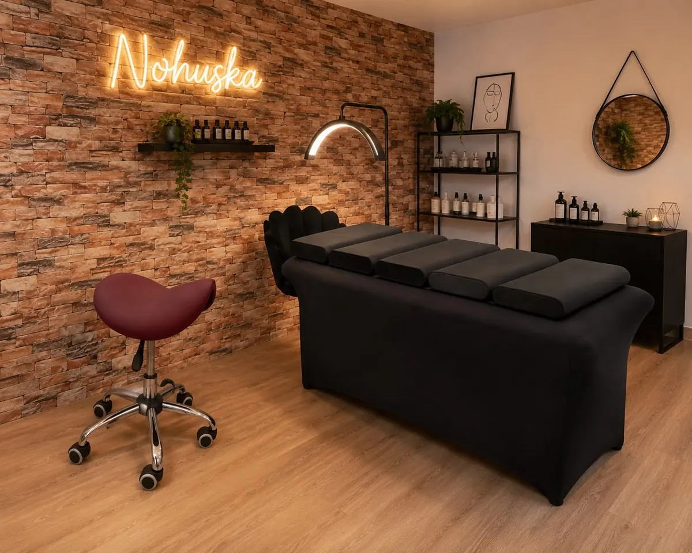

Belleza natural · Granollers
Centro de estética en Granollers especializado en mirada y micropigmentación
Nohuska Beauty Lab reúne diseño de cejas, lifting coreano, tinte vegano, freckles, micropigmentación y cuidado facial en un espacio especializado de Granollers.

Estética y maquillaje semipermanente: elige el objetivo de tu visita
Un cambio de mirada no siempre necesita pigmento. El diseño, el laminado y el tinte trabajan sobre el pelo que tienes; el lifting curva tu pestaña natural. La micropigmentación o maquillaje semipermanente plantea un diseño con pigmento y requiere valorar la piel, los trabajos anteriores y la evolución del color.
Si buscas cuidado de la piel, la limpieza facial vegana K-Beauty tiene una finalidad distinta. Te ayudamos a distinguir los servicios antes de reservar, con información sobre sus límites y cuidados.
Elige según lo que te gustaría mejorar
Cejas y mirada
Si quieres ordenar y definir el pelo natural, consulta diseño y depilación de cejas o Natural Brow: diseño, laminado y tinte. Para curvar tu pestaña natural, consulta el lifting coreano.
Diseño con pigmento
La micropigmentación permite plantear un diseño de cejas, labios o pecas y un efecto visual capilar. Necesita una valoración propia de la piel, el objetivo y el mantenimiento.
Piel y cuidado facial
Si notas congestión, textura o dudas con tu rutina, consulta la limpieza e higiene facial K-Beauty. El protocolo se adapta a la piel observada en la valoración.
Puedes consultar cuatro casos propios autorizados en Nohuska Results Lab antes de elegir. Si dudas entre técnicas, cuéntanos qué buscas; te orientaremos sin que tengas que escoger un servicio por su nombre.
¿Por qué elegir un centro de estética especializado?
Un resultado natural empieza antes del tratamiento. Valentina cuenta con más de cinco años de experiencia y formación especializada en micropigmentación, cejas y diseño de la mirada. Primero valoramos piel, pelo natural, proporciones y el mantenimiento que puedes asumir.
Esta especialización nos permite explicarte cuándo basta con un diseño, un laminado o un lifting y cuándo puede encajar una técnica de micropigmentación. La recomendación se adapta a tu caso, sin aplicar la misma solución a todas las personas.
Precios y tiempo de cita para organizar tu visita
Estas son las tarifas confirmadas de los siguientes servicios. Puedes consultar qué opción encaja contigo antes de confirmar una cita; no indican disponibilidad de agenda.
Natural Brow
55 € · aproximadamente 1 hora. Diseño, laminado y tinte para trabajar tus cejas naturales.
Lifting coreano con tinte
55 € · aproximadamente 1 hora. Curvatura y definición de tu pestaña natural, sin añadir fibras.
Korean Gaze
85 € · aproximadamente 90 minutos. Natural Brow y lifting coreano con tinte, frente a 110 € por separado.
Limpieza facial K-Beauty
50 € · aproximadamente 1 hora. Limpieza vegana, masaje y masaje capilar incluidos.
Para extensiones, micropigmentación y otros servicios, consulta el alcance y el presupuesto de tu caso en la guía completa de tratamientos. Cada ficha explica qué estás solicitando.
Centro de estética en Granollers.
Estamos en Avinguda Sant Esteve, 40, 08402 Granollers. Horario habitual: lunes a sábado, de 10:00 a 20:00, con cita previa.
Atendemos a personas de Granollers, el Vallès Oriental y otros puntos de la provincia de Barcelona.
Cómo llegar a Nohuska¿No sabes qué reservar?
Cuéntanos qué te gustaría mejorar y te indicaremos qué servicio encaja mejor. No es necesario escoger una técnica antes de consultarnos.
Pedir orientaciónPreguntas sobre el centro
¿Dónde está Nohuska Beauty Lab?
En Avinguda Sant Esteve, 40, 08402 Granollers, Barcelona.
¿Qué tratamientos ofrece?
Micropigmentación, cejas, pestañas, freckles, labios, camuflaje de ojeras, capilar y cuidado facial, entre otros servicios especializados.
¿Por qué elegir un centro de estética especializado?
Porque permite valorar la piel, el pelo natural y los rasgos antes de recomendar la técnica, el diseño y los cuidados adecuados para cada caso.
¿Es necesario reservar cita?
Sí. Trabajamos con cita previa para dedicar el tiempo de valoración y tratamiento necesario.